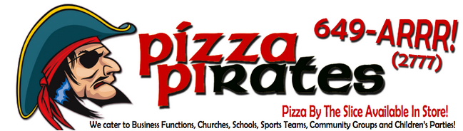

| Start Time | End Time | Company | Location |
| 10:15 AM | 11:00 AM | Sasktel & Sasktel International | Spinks S311 |
|
As the number one communications provider in Saskatchewan, the most satisfying full service
wireless provider in the nation (J.D. Power), and one of Canada's Top 100 Employers, SaskTel
is a place where employees feel good about the products and services they deliver to customers.
In a world where new ideas and tools for communicating emerge every day, we help people find what
they need to make it all work for them no matter where they live, work, or play. We bring more life
and more connectivity to our customers every day with the value of our plans, the reach of our
coverage, the reliability of our network, and the quality of our service.
Sasktel International Recognized as a global innovator and experience-backed solution provider, SaskTel International markets leading-edge software solutions and professional consulting services. SaskTel International leverages a unique relationship as a wholly-owned subsidiary of an actual operating Telco to enable businesses around the globe to achieve strategic communications initiatives and projects. With the completion of over 60 projects spanning 40 countries and six continents, SaskTel International is truly a local organization with a global reach. An emphasis on innovation and the proven experience of SaskTel ensures SaskTel Internationalís software and service offering remains at the forefront of the highly competitive and dynamic communications industry |
|||
| 11:00 AM | 11:30 AM | SED Systems | Spinks S311 |
|
SED Systems provides the world's leading satellite companies with innovative solutions for
building, operating, and testing their ground systems. Our systems, now operating on six
continents, use the latest in hardware and software technologies across a diverse range of
applications.
Our software developers work on a variety of systems, including the satellite radio broadcast systems that we developed for SiriusXM. These systems merge hundreds of audio channels into the satellite data streams that are delivered to customer radios. Currently, we have a team developing a gateway system that allows aircraft and ground stations to exchange critical air traffic control messages over Inmarsat's broadband satellite network. Our software developers experience all phases of development, including delivering systems to sites located all over the world. Developers are regularly tasked with new challenges on projects and succeed through learning and applying new technologies. We write well-tested and efficient C++, Java and Python code using the Eclipse IDE. We are located in Saskatoon at Innovation place near the University of Saskatchewan. Our software group is looking for graduates with a four-year degree in Computer Science or a three-year CS degree combined with an Electrical Engineering or Engineering Physics degree. To apply, visit our websites careers section at www.sedsystems.ca. |
|||
| 11:30 AM | 12:00 PM | Arcurve | Spinks S320 |
|
Arcurve is a software services company. Our clients require business-driven software solutions.
We are focused on delivering superior software solutions to a wide range of clients. We help
companies work better and more efficiently. We do this by augmenting technical teams, improving
existing software, integrating the applications you have, or by innovating new software solutions
to meet your custom requirements.
At Arcurve, we believe that to get the best software solution, you need the right people at the right time. Your project will benefit from both the experience of our skilled software professionals, as well as our capable business and domain experts. |
|||
| 12:00 PM | 12:30 PM | -- Lunch -- | Spinks S360 |
Pizza Lunch Provided by: |
|||
| 12:30 PM | 1:00 AM | Saskatoon TechWorks | Spinks S360 |
|
Saskatoon TechWorks Inc. is a makerspace (or hackerspace) that is focused on science,
technology, culture, mechanics and the digital arts. We offer a space where people with
diverse backgrounds can socialize, collaborate and learn. Through shared resources,
knowledge and ideas we strive to create an atmosphere that promotes community and learning.
We also fulfill our role as a community resource by hosting workshops on electronics, programming, crafts, and any other skills that members (or guests) are willing to share. |
|||
| 1:00 PM | 1:30 AM | Point2 | Spinks S320 |
|
Point2 (a division of Yardi Systems Inc.) is one of the largest and most successful software companies
in Saskatchewan, with a proven history of leadership and innovation in all the industries that we serve.
We are constantly on the lookout for talented, motivated folks that are focused on delivering innovative
solutions and are passionate about working with other highly skilled professionals in an agile team
environment.
If you are seeking an opportunity to join a team that values the diversity of its employees, rewards individual creativity, values your input, cultivates your talents and work with the latest technologies, then Point2 is the place for you. We offer great perks, competitive salaries and, best of all, a laid-back, non-stop learning environment. |
|||
| 1:30 PM | 2:00 PM | Potash Corp | Arts 146 |
|
PotashCorp, the world's largest crop nutrient company plays an integral role in global food production.
The company produces the three essential nutrients required to help farmers grow healthier, more abundant
crops. With global population rising and diets improving in developing countries, crop nutrients such as
potash, phosphates and nitrogen offer a responsible and practical solution to help produce the food we need,
from the land we have.
With operations and business interests in seven countries, PotashCorp is an international enterprise and a key player in meeting the growing challenge of feeding the world. To learn more about the benefits of our products and how we are helping feed the future, visit us at PotashCorp.com. |
|||
| 2:00 PM | 2:30 PM | Arts 146 | |
|
The name "Google," a play on the word "googol," the mathematical term for a 1 followed by 100 zeros.
The name reflects the immense volume of information that exists, and the scope of Google's mission:
to organize the world's information and make it universally accessible and useful.
Google has offices around the globe, but regardless of where we are, we nurture an invigorating, positive environment by hiring talented, people who share our commitment to creating great products. Googlers thrive in small, focused teams and high-energy environments, believe in the ability of technology to change the world, and are as passionate about their lives as they are about their work. Google Waterloo is a fast growing office with many new exciting projects being developed. We're always on the look-out for new Googlers. |
|||
| 2:30 PM | 3:00 PM | GB Internet Solutions | Arts 146 |
|
GB Internet Solutions is a fast paced Regina-based software development company, with 12 years of
growth and success. GB creates award winning websites & innovative mobile applications. Our two key
accomplishments are GasBuddy.com and OpenStoreLoyalty.com.
GB embraces a work hard, play hard environment. We have a growing team of 45+ superstars who are passionate about technology in Regina, and who develop all of our cool web and mobile applications in-house. We’re passionate and professional internet pioneers, creative and curious thinkers, and mediocre slo-pitch players. |
|||
| 3:00 PM | 3:30 PM | zu | Arts 146 |
|
zu is an digital agency with over 17 years experience thinking and building for the web and mobile.
Each member of our team is an expert in their craft whether it's strategy, creative or development
and takes pride in what they make. We enjoy creating and building beautiful, functional things, from
simple websites to complex web applications. We think of technology as tools for solving problems. And
as technology changes, we immediately adapt and add to our expertise.
zu believes in a place where laughter is accepted and innovation is everywhere. With some of the sharpest minds and brightest smiles you'll find, it's hard not to like coming to work every day. We work hard. We play hard. So whether you are graduating, or looking for something fresh, hopefully we'll see you soon. |
|||
| 3:30 PM | 4:00 PM | Noodlecake Studios | Arts 146 |
|
Noodlecake Studios is a small indie game studio based in Saskatoon, Saskatchewan, Canada.
Founded in early 2011, Noodlecake found success with its first game, Super Stickman Golf,
and has since expanded into publishing, releasing games on multiple platforms.
Noodlecake has published over 20 titles across multiple app stores and are
currently hard at work on Super Stickman Golf 2!
|
|||